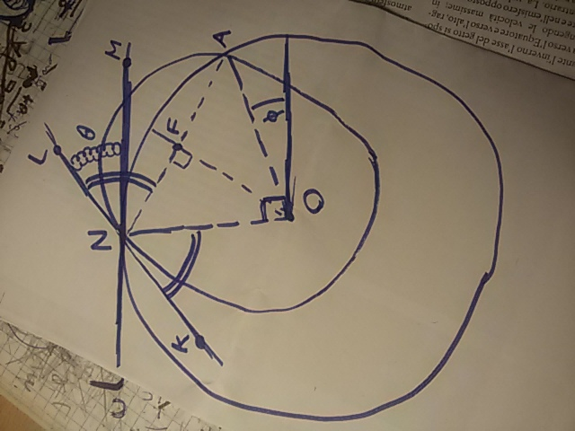

bogcal117 dic 2014, 12:29
Un missile balistico (a quanto pare un missile che data una velocità iniziale, si muove per inerzia), viene lanciato dal polo nord. Il bersaglio si trova ad una latitudine \(\phi\) (\(>0\) se si trova nell'emisfero nord e \(<0\) se si trova nell'emisfero sud). A quale angolo (rispettto all'orizzonte) bisogna lanciare il missile per far sì che raggiunga l'obiettivo con una velocità di lancio minima?
Simone2567 dic 2014, 21:55
Esprimendolo in gradi:
\(\displaystyle \theta =\frac{\phi + 90}{4}\)
?? :roll:
bogcal117 dic 2014, 23:01
Esatto! :) Però sono curioso dello svolgimento perché esistono tipo 3 o 4 soluzioni carine e se a qualcuno interessa le vediamo tutte ;)
Simone2568 dic 2014, 1:16
Orrida soluzione in geometria analitica:
Pensando a risultati assurdi mi sono tirato su le maniche e l'ho picchiato con i conti; voglio trovare l'orbita ellittica che richieda il minor dispendio di energia, quindi quella con l'asse maggiore \(a\) minore possibile (l'energia associata ad un'orbita ellittica vale \(E=-\frac{mMG}{2a}\)). Sappiamo che il centro della terra occupa uno dei due fuochi e che il polo nord e il punto di atterraggio sono simmetrici rispetto a un asse dell'orbita ellittica. A questo punto comincia la parte mortale: Si risolve in coordinate cartesiane, si ottengono una famiglia di ellissi e si ricava la lunghezza dell'asse maggiore in funzione dell'asse minore; si trova il minimo e quindi la lunghezza dell'asse maggiore! A questo punto si può ricavare la velocità totale di lancio e con molti altri conti il momento angolare del missile... Con altri conti si trova il rapporto tra la velocità radiale e la velocità totale nell'istante del lancio che sarebbe il coseno del risultato; con magheggi algebrici si trova l'espressione scritta sopra! :twisted:
Soluzione strafica in geometria sintetica:
Vista la semplicità del risultato ho pensato che si potesse raggiungere lo scopo con un po' di angle-chasing! L'ellisse è il luogo dei punti del piano tali che la somma delle distanze dai fuochi è costante, tale somma è la lunghezza dell'asse maggiore. Metto in allegato la figura:
Affinchè la somma \(ON+OF\) (dove \(O\) è il centro della terra, \(N\) il polo nord e \(F\) il secondo fuoco dell'orbita) sia minima \(NF\) deve essere perpendicolare all'asse maggiore e quindi al raggio terrestre!!! A questo punto ci viene in aiuto una proprietà formidabile dell'ellisse (e in generale delle coniche): se \(KL\) è la tangente all'ellisse nel punto \(N\) allora gli angoli \(ONK\) e \(FNL\) sono congruenti!!! A questo punto se si ricorda che \(FNM\) è angolo alla circonferenza rispetto all'angolo al centro \(NOA\) il gioco è fatto:
\(\theta=FNL-FNM=\frac{180-FNO}{2}-\frac{AON}{2}=\frac{180-(90-FON)}{2}-\frac{90-\phi}{2}=\frac{180-(90-\frac{90-\phi}{2})}{2}-\frac{90-\phi}{2}=\frac{90+\phi}{4}\)
-
Allegati
-

- 20141208_001650.jpg (113.62 KiB) Visto 6992 volte
Simone2568 dic 2014, 2:00
Hai perfettamente ragione errore mio ;)
Butti un indizio per un'altra soluzione possibile? :)
andrea968 dic 2014, 2:34
bogcal11 ha scritto:
Andrea, perché dovrebbero avere la stessa velocità angolare?
beh perchè visto che \(L=mr^2\omega\) ,se la terra è sferica il punto e il bersaglio si trovano alla stessa distanza dal centro e visto che il momento angolare si conserva allora la velocità angolare al polo nord deve essere uguale alla velocità angolare al bersaglio
Simone2568 dic 2014, 10:26
Si la velocitá angolare all'impatto è uguale a quella nel lancio! Se diminuisci questa velocitá angolare dovrai tirare l'oggetto più in alto! Come lanciare un sasso: se vuoi lanciarlo a 40 metri dandogli poca velocitá orizzontale dovrai lanciarlo molto forte verso l'alto! Sai che la condizione che minimizza il dispendio di energia è a 45 gradi!